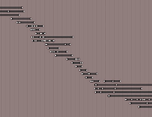

Workflow¶
Tùy thuộc vào đặc tính của footage gốc, việc đạt được kết quả ổn định hình ảnh (stabilization) tốt có thể đơn giản và dễ dàng, hoặc có thể đòi hỏi công sức, sự tận tâm và kế hoạch cẩn thận. Phần này đề cập một số cân nhắc thực tế nhằm giúp cải thiện kết quả.
Trường hợp đơn giản¶
Bất cứ khi nào camera về cơ bản được cố định, hoặc ít nhất là "gần như" đứng yên, và footage sắc nét, không có motion blur, việc ổn định hoàn hảo đều dễ đạt được. Đây có thể là trường hợp đã dùng tripod nhưng gió hoặc rung chấn trên sàn (ví dụ trên sân khấu) gây ra vài cú rung nhẹ. Các cú quay camera vai do operator giàu kinh nghiệm thực hiện cũng thường thuộc nhóm này.
Dùng càng ít điểm càng tốt. Hãy bắt đầu với một điểm duy nhất nằm ngay trên chủ thể chính.
Track điểm duy nhất này chính xác nhất có thể. Cẩn thận với các chuyển động và thay đổi hình dạng của điểm đặc trưng được track. Tiến hành theo từng bước nhỏ (ví dụ 50 frame), phóng to và chỉnh lại điểm mục tiêu thủ công khi nó bị trôi đi. Một phương án khác là dùng vùng mục tiêu lớn hơn cho tracking; vì ta chỉ track đúng một điểm nên tốc độ tracking chậm hơn có thể chấp nhận được.
Sau khi bật ổn định cơ bản (vị trí), hãy cân nhắc xem bạn có thực sự cần ổn định xoay hay không. Thường thì những dao động chậm, nhẹ không mấy dễ nhận thấy và không đáng để bỏ thêm thời gian làm việc cùng tổn thất chất lượng do ổn định xoay và scale gây ra.
Đối với xoay, hãy bắt đầu với một điểm bổ sung, đặt cách xa điểm ban đầu nhưng tốt nhất là vẫn nằm trên chủ thể chính.
Hãy cân nhắc khắc phục một số chuyển động dư còn lại chậm bằng cách tự tạo animation cho các tham số "Expected *", trước cả khi bạn nghĩ đến việc thêm marker tracking. Bởi vì việc thêm marker thường không đáng công sức.
Nếu cần thêm điểm, mục tiêu quan trọng nhất là đạt được tính đối xứng. Đặt các điểm tracking vị trí đối xứng phía trên và phía dưới đường chân trời. Đặt các điểm tracking xoay theo các hướng chéo đối nhau, luôn tập trung quanh vùng tiêu điểm chính.
Tránh footage có vấn đề¶
Bộ ổn định 2D không thể tạo ra phép màu; một số lỗi đơn giản là không thể sửa thỏa đáng. Các vấn đề nổi tiếng gồm motion blur, rolling shutter, autofocus giật cục và các artefact nén di động. Đặc biệt khi bạn đã thành công với ổn định cơ bản, các lỗi ảnh như vậy lại càng trở nên dễ thấy và phiền toái. Khi đang trên trường quay hoặc tại hiện trường, bạn có thể bị cám dỗ "sửa mọi chuyện trong hậu kỳ". Hãy chống lại ảo tưởng ấy, nó hiếm khi kết thúc tốt đẹp.
Ưu tiên thời gian phơi sáng ngắn để tránh motion blur. Dù motion blur giúp các chuyển động quay phim trông mượt mà và tự nhiên hơn, nó cản trở nghiêm trọng khả năng track điểm đặc trưng một cách chính xác. Như một chỉ dẫn, hãy cố đạt ít nhất 1/250 giây.
Ưu tiên frame rate cao hơn. Càng nhiều độ phân giải thời gian để bộ ổn định làm việc, kết quả càng tốt. Nếu bạn có lựa chọn giữa chế độ progressive và interlaced, nhất định hãy dùng interlaced rồi khử interlace (deinterlace) footage lên frame rate gấp đôi. Việc này có thể thực hiện bằng filter yadif của FFmpeg: dùng mode 1 (
send_field).Cẩn thận với hiệu ứng Rolling Shutter. Tránh các chuyển động ngang nhanh. Nếu có thể, hãy ưu tiên camera tạo ít rolling shutter hơn. Ngoài ra, dùng frame rate cao hơn sẽ giảm lượng rolling shutter; đây là một lý do nữa để ưu tiên interlaced thay vì progressive cho mục đích hiện tại.
Tắt autofocus. Tốt hơn là lên kế hoạch cho chuyển động từ trước, đặt tiêu điểm cố định và dựa vào độ sâu trường ảnh bằng cách dùng khẩu độ nhỏ. Các dao động giật cục có thể không dễ nhận thấy với người xem, nhưng feature tracking có xu hướng trượt khỏi các phần tử ảnh bị mất nét; việc sửa lỗi này thủ công sau đó có thể lãng phí rất nhiều thời gian.
Tăng cường độ ánh sáng, ít nhất là dùng độ nhạy cao hơn. Điều này giúp đặt được tốc độ cửa chập nhanh cùng khẩu độ nhỏ. Ánh sáng tốt hơn và phơi sáng chuẩn cũng giúp giảm ảnh hưởng của artefact nén. Nếu có thể, hãy chọn codec ít giảm dữ liệu hơn, color space tốt hơn, v.v. Chắc chắn ta sẽ mất một phần chất lượng do phép nội suy cần thiết cho việc ổn định, cộng thêm phần chất lượng mất đi do chuyển đổi color space.
Các chuyển động phức tạp¶
Khi footage được xây dựng trên các chuyển động camera có chủ đích và phức tạp, quy trình ổn định trở nên rắc rối hơn — đặc biệt khi vùng quan tâm chính dịch chuyển bên trong cú quay. Khi làm việc với nhiều track và animation chi tiết, rất dễ rơi vào tình huống các thao tác bổ sung thực chất làm giảm chất lượng, trong khi lại khó phát hiện và định vị nguyên nhân gốc rễ của vấn đề. Khuyến nghị là tiến hành một cách hệ thống, bắt đầu từ khung tổng thể rồi mới đi đến tinh chỉnh các khía cạnh cụ thể.
Hiểu bản chất của các chuyển động trong cú quay, cả những chuyển động có chủ đích lẫn vô tình.
Track một số điểm đặc trưng phù hợp cho vị trí.
Thiết lập ổn định vị trí cơ bản. Việc này bao gồm quyết định dùng điểm đặc trưng nào cho đoạn nào của cú quay. Làm việc với các trọng số track để tâm trọng số có chuyển động nhất quán tổng thể, phù hợp với tiêu điểm vốn có của cú quay.
Định nghĩa các chuyển động pan của camera ảo (thông qua animation của tham số Expected Position).
Thêm tracking cho ổn định xoay và zoom.
Vòng tinh chỉnh:
Chia toàn bộ thời lượng của cú quay thành các đoạn hợp lý để xác định chuyển động camera dự kiến. Sau đó tinh chỉnh từng đoạn theo từng bước tăng dần, cho đến khi kết quả tổng thể trông thỏa mãn...
Tạo animation cho các tham số ổn định¶
Việc tạo animation cho một số tham số trong suốt thời lượng cú quay thường là cần thiết, ít nhất là để hoàn thiện các nét cuối, bao gồm kiểm soát hệ số scale để che các viền đen nhấp nhô. Không may là có một giới hạn đã biết trong phiên bản hiện tại: không thể mở các editor animation chung (Graph editor và Dope Sheet) cho dữ liệu animation nằm ngoài scene 3D. Vì vậy, mặc dù có thể đặt keyframe ngay trong các điều khiển UI của bộ ổn định (hoặc bằng cách nhấn phím I hoặc nhờ menu ngữ cảnh), nhưng không thể thao tác trên các đường cong thu được một cách đồ họa. Cách duy nhất để chỉnh lại hoặc xóa một keyframe sai là đưa timeline đến đúng frame đó rồi dùng menu ngữ cảnh của điều khiển UI đã được animate. (Mẹo: màu của điều khiển UI thay đổi khi bạn đang đứng đúng tại số frame của keyframe.)
Thiết lập track không đều¶
Có thể không track được một điểm đặc trưng nhất định trong toàn bộ thời lượng cú quay. Điểm đặc trưng có thể bị mờ hoặc bị che khuất; thậm chí có thể hoàn toàn ra khỏi tầm nhìn do chuyển động camera có chủ đích. Trong tình huống đó, ta cần một điểm đặc trưng được track khác đảm nhận vai trò của nó, và cần một khoảng thời gian chồng lấn để có chuyển tiếp mượt mà mà không bị giật lộ liễu.


Các track không đều.¶
Bộ ổn định có khả năng xử lý các khoảng trống và vùng phủ một phần trong các track đã cho. Tuy nhiên, giả định cơ bản là mỗi track phủ một điểm tham chiếu cố định duy nhất bất cứ khi nào có dữ liệu dùng được/được bật. Vì vậy, bạn không được "tái sử dụng" một track để bám theo vài điểm khác nhau; thay vào đó, bạn nên tắt nó đi và như vậy là kết thúc track khi việc track điểm đặc trưng đó không còn khả thi. Bạn có thể bao gồm các "khoảng trống" khi một điểm tracking tạm thời bị tắt hoặc không khả dụng, nhưng nên bắt đầu một track mới cho mỗi điểm đặc trưng mới, khác biệt cần track.
Mỗi track đóng góp vào kết quả tổng thể ở mức độ được kiểm soát qua tham số Stab Weight của nó. Tham số này được đánh giá theo từng frame, cho phép ta kiểm soát mức ảnh hưởng của một track bằng cách tạo animation cho chính Stab Weight này. Bạn có thể hình dung hoạt động tổng thể của bộ ổn định như thể mỗi điểm tracking "kéo" bức ảnh qua một lò xo đàn hồi: khi hạ Stab Weight của một điểm tracking xuống, bạn giảm lượng "kéo" mà nó tạo ra. Đôi khi đóng góp của các track khác nhau phải chống lại nhau một phần. Hiệu ứng này có thể được dùng để triệt tiêu chuyển động giả, ví dụ như do phối cảnh gây ra. Nhưng khi trong tình huống đó mà một trong các track liên quan đột nhiên biến mất, kết quả có thể là một cú giật về vị trí hoặc góc xoay của ảnh. Vì vậy, bất cứ khi nào nhận thấy một cú giật đúng tại frame mà một track phủ một phần bắt đầu hoặc kết thúc, ta cần làm mềm chuyển tiếp. Ta làm điều đó bằng cách animate Stab Weight giảm dần để đạt về không ngay tại điểm ranh giới. Tương tự như vậy, khi lên kế hoạch "bàn giao" giữa vài track phủ một phần, ta định nghĩa một cross-fade trong suốt khoảng thời gian các track chồng lấn, cũng bằng cách animate các tham số Stab Weight tương ứng. Nhưng ngay cả với sự làm mượt bằng cross-fade như vậy, vẫn có thể còn sót lại chuyển động dư, khi đó cần hiệu chỉnh bằng các tham số Expected Position hoặc Expected rotation. Điều tối quan trọng là tránh các chuyển động "vọt quá đà" trong tình huống này — luôn cố gắng đặt các keyframe animation vào đúng cùng một số frame cho mọi track và tham số có liên quan.